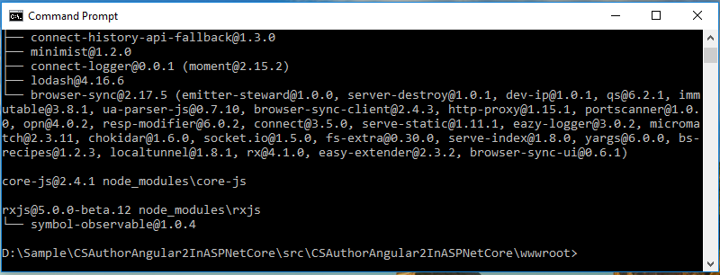
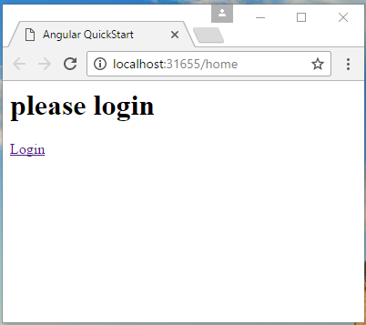
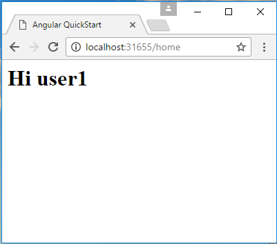

How to authorize Angular 2 app with asp.net core web api
How to authorize Angular 2 app with asp.net core web api
Introduction
ASP.NET Core is the new cross platform framework for web, and the angular 2 is a new framework for front end.
This sample will show you how to authorization Angular 2 app with asp.net core web api.
Sample prerequisites
• .NET Core 1.0 or later version(s). [.NET Core + Visual Studio tooling]
• Microsoft Visual Studio 2015 update3 or above. [Visual Studio 2015 installer]
• Node.js v5.0.0 or later version(s). [Node.js and NPM]
• Npm 3.0.0 or above. [Node.js and NPM]
Building the sample
• Press win + R and type cmd to open Command Line window.

• Local to the wwwroot folder of this solution.

• Type command npm install, then the npm will install the packages.

• Open the sample solution “CSAuthorAngular2InASPNetCore.sln” in the folder “CSAuthorAngular2InASPNetCore” using Visual Studio.
• Right click the project “CSAuthorAngular2InASPNetCore” and select Restore packages.

• Press F6 Key or select Build -> Build Solution from the menu to build the sample.
Running the sample
• Open the Sample solution using Visual Studio, then press F5 Key or select Debug -> Start Debugging from the menu.
• When the web application is running, you can see this page in your browser.

• Click link Login, go to the login page.

• Type username as user1, password as user1psd, and then click the Login button.

• After you have typed the correct user name and password, the app will be routed to home. At home page, you can see your user name.

Using the code
Back end
Startup.cs
public void ConfigureServices(IServiceCollection services)
{
services.AddApplicationInsightsTelemetry(Configuration);
services.AddAuthorization(auth =>
{
auth.AddPolicy("Bearer", new AuthorizationPolicyBuilder()
.AddAuthenticationSchemes(JwtBearerDefaults.AuthenticationScheme)
.RequireAuthenticatedUser().Build());
});
services.AddMvc();
}
public void Configure(IApplicationBuilder app, IHostingEnvironment env, ILoggerFactory loggerFactory)
{
app.UseApplicationInsightsRequestTelemetry();
app.UseApplicationInsightsExceptionTelemetry();
#region static files
app.UseStaticFiles();
#endregion
#region Handle Exception
app.UseExceptionHandler(appBuilder =>
{
appBuilder.Use(async (context, next) =>
{
var error = context.Features[typeof(IExceptionHandlerFeature)] as IExceptionHandlerFeature;
if (error != null && error.Error is SecurityTokenExpiredException)
{
context.Response.StatusCode = 401;
context.Response.ContentType = "application/json";
await context.Response.WriteAsync(JsonConvert.SerializeObject(new RequestResult
{
State = RequestState.NotAuth,
Msg = "token expired"
}));
}
else if (error != null && error.Error != null)
{
context.Response.StatusCode = 500;
context.Response.ContentType = "application/json";
await context.Response.WriteAsync(JsonConvert.SerializeObject(new RequestResult
{
State = RequestState.Failed,
Msg = error.Error.Message
}));
}
else await next();
});
});
#endregion
#region UseJwtBearerAuthentication
app.UseJwtBearerAuthentication(new JwtBearerOptions()
{
TokenValidationParameters = new TokenValidationParameters()
{
IssuerSigningKey = TokenAuthOption.Key,
ValidAudience = TokenAuthOption.Audience,
ValidIssuer = TokenAuthOption.Issuer,
ValidateIssuerSigningKey = true,
ValidateLifetime = true,
ClockSkew = TimeSpan.FromMinutes(0)
}
});
#endregion
#region route
app.UseMvc(routes =>
{
routes.MapRoute(
name: "default",
template: "{controller=Home}/{action=Index}");
routes.MapSpaFallbackRoute("spa-fallback", new { controller = "Home", action = "Index" });
});
#endregion
}
public void ConfigureServices(IServiceCollection services) { services.AddApplicationInsightsTelemetry(Configuration); services.AddAuthorization(auth => { auth.AddPolicy("Bearer", new AuthorizationPolicyBuilder() .AddAuthenticationSchemes(JwtBearerDefaults.AuthenticationScheme) .RequireAuthenticatedUser().Build()); }); services.AddMvc(); } public void Configure(IApplicationBuilder app, IHostingEnvironment env, ILoggerFactory loggerFactory) { app.UseApplicationInsightsRequestTelemetry(); app.UseApplicationInsightsExceptionTelemetry(); #region static files app.UseStaticFiles(); #endregion #region Handle Exception app.UseExceptionHandler(appBuilder => { appBuilder.Use(async (context, next) => { var error = context.Features[typeof(IExceptionHandlerFeature)] as IExceptionHandlerFeature; if (error != null && error.Error is SecurityTokenExpiredException) { context.Response.StatusCode = 401; context.Response.ContentType = "application/json"; await context.Response.WriteAsync(JsonConvert.SerializeObject(new RequestResult { State = RequestState.NotAuth, Msg = "token expired" })); } else if (error != null && error.Error != null) { context.Response.StatusCode = 500; context.Response.ContentType = "application/json"; await context.Response.WriteAsync(JsonConvert.SerializeObject(new RequestResult { State = RequestState.Failed, Msg = error.Error.Message })); } else await next(); }); }); #endregion #region UseJwtBearerAuthentication app.UseJwtBearerAuthentication(new JwtBearerOptions() { TokenValidationParameters = new TokenValidationParameters() { IssuerSigningKey = TokenAuthOption.Key, ValidAudience = TokenAuthOption.Audience, ValidIssuer = TokenAuthOption.Issuer, ValidateIssuerSigningKey = true, ValidateLifetime = true, ClockSkew = TimeSpan.FromMinutes(0) } }); #endregion #region route app.UseMvc(routes => { routes.MapRoute( name: "default", template: "{controller=Home}/{action=Index}"); routes.MapSpaFallbackRoute("spa-fallback", new { controller = "Home", action = "Index" }); }); #endregion }
TokenAuthController.cs
[HttpPost]
public string GetAuthToken([FromBody]User user)
{
var existUser = UserStorage.Users.FirstOrDefault(u => u.Username == user.Username && u.Password == user.Password);
if (existUser != null)
{
var requestAt = DateTime.Now;
var expiresIn = requestAt + TokenAuthOption.ExpiresSpan;
var token = GenerateToken(existUser, expiresIn);
return JsonConvert.SerializeObject(new RequestResult
{
State = RequestState.Success,
Data = new
{
requertAt = requestAt,
expiresIn = TokenAuthOption.ExpiresSpan.TotalSeconds,
tokeyType = TokenAuthOption.TokenType,
accessToken = token
}
});
}
else
{
return JsonConvert.SerializeObject(new RequestResult
{
State = RequestState.Failed,
Msg = "Username or password is invalid"
});
}
}
private string GenerateToken(User user, DateTime expires)
{
var handler = new JwtSecurityTokenHandler();
ClaimsIdentity identity = new ClaimsIdentity(
new GenericIdentity(user.Username, "TokenAuth"),
new[] {
new Claim("ID", user.ID.ToString())
}
);
var securityToken = handler.CreateToken(new SecurityTokenDescriptor
{
Issuer = TokenAuthOption.Issuer,
Audience = TokenAuthOption.Audience,
SigningCredentials = TokenAuthOption.SigningCredentials,
Subject = identity,
Expires = expires
});
return handler.WriteToken(securityToken);
}
[HttpPost] public string GetAuthToken([FromBody]User user) { var existUser = UserStorage.Users.FirstOrDefault(u => u.Username == user.Username && u.Password == user.Password); if (existUser != null) { var requestAt = DateTime.Now; var expiresIn = requestAt + TokenAuthOption.ExpiresSpan; var token = GenerateToken(existUser, expiresIn); return JsonConvert.SerializeObject(new RequestResult { State = RequestState.Success, Data = new { requertAt = requestAt, expiresIn = TokenAuthOption.ExpiresSpan.TotalSeconds, tokeyType = TokenAuthOption.TokenType, accessToken = token } }); } else { return JsonConvert.SerializeObject(new RequestResult { State = RequestState.Failed, Msg = "Username or password is invalid" }); } } private string GenerateToken(User user, DateTime expires) { var handler = new JwtSecurityTokenHandler(); ClaimsIdentity identity = new ClaimsIdentity( new GenericIdentity(user.Username, "TokenAuth"), new[] { new Claim("ID", user.ID.ToString()) } ); var securityToken = handler.CreateToken(new SecurityTokenDescriptor { Issuer = TokenAuthOption.Issuer, Audience = TokenAuthOption.Audience, SigningCredentials = TokenAuthOption.SigningCredentials, Subject = identity, Expires = expires }); return handler.WriteToken(securityToken); }
Front end
Auth.service.ts
login(userName: string, password: string): Promise<RequestResult> {
return this.http.post("/api/TokenAuth", { Username: userName, Password: password }).toPromise()
.then(response => {
let result = response.json() as RequestResult;
if (result.State == 1) {
let json = result.Data as any;
sessionStorage.setItem("token", json.accessToken);
}
return result;
})
.catch(this.handleError);
} checkLogin(): boolean {
var token = sessionStorage.getItem(this.tokeyKey);
return token != null;
}
getUserInfo(): Promise<RequestResult> {
return this.authGet("/api/TokenAuth");
}
authGet(url): Promise<RequestResult> {
let headers = this.initAuthHeaders();
return this.http.get(url, { headers: headers }).toPromise()
.then(response => response.json() as RequestResult)
.catch(this.handleError);
}
login(userName: string, password: string): Promise<RequestResult> { return this.http.post("/api/TokenAuth", { Username: userName, Password: password }).toPromise() .then(response => { let result = response.json() as RequestResult; if (result.State == 1) { let json = result.Data as any; sessionStorage.setItem("token", json.accessToken); } return result; }) .catch(this.handleError); } checkLogin(): boolean { var token = sessionStorage.getItem(this.tokeyKey); return token != null; } getUserInfo(): Promise<RequestResult> { return this.authGet("/api/TokenAuth"); } authGet(url): Promise<RequestResult> { let headers = this.initAuthHeaders(); return this.http.get(url, { headers: headers }).toPromise() .then(response => response.json() as RequestResult) .catch(this.handleError); }
More information
How to achieve a bearer token authentication and authorization in ASP.NET Core
Angular 2 Docs
https://code.msdn.microsoft.com/How-to-authorization-914d126b/https://angular.io/docs/ts/latest/
Microsoft All-In-One Code Framework is a free, centralized code sample library driven by developers' real-world pains and needs. The goal is to provide customer-driven code samples for all Microsoft development technologies, and reduce developers' efforts in solving typical programming tasks. Our team listens to developers’ pains in the MSDN forums, social media and various DEV communities. We write code samples based on developers’ frequently asked programming tasks, and allow developers to download them with a short sample publishing cycle. Additionally, we offer a free code sample request service. It is a proactive way for our developer community to obtain code samples directly from Microsoft.